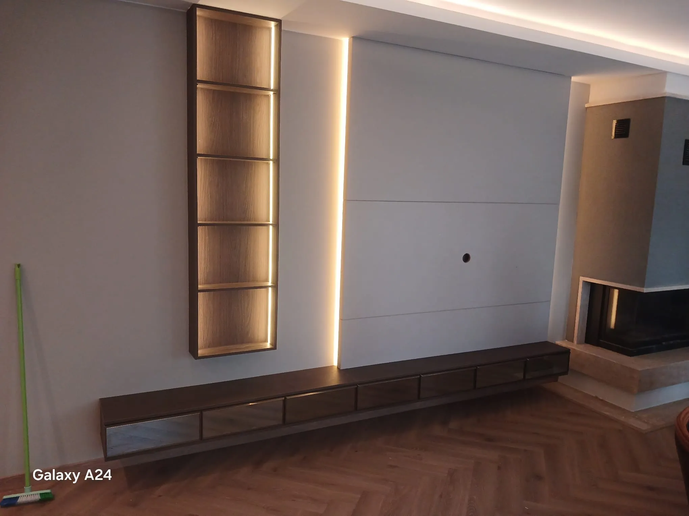
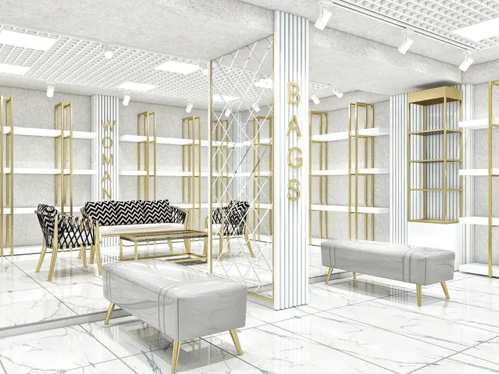

A punoni në projekte jashtë Turqisë?
Po. Vlerësojmë projektet në Ballkan sipas vendndodhjes, përmasës, prodhimit, transportit dhe montimit.
Öder Mimarlık projekton dhe koordinon mobilje me porosi, kuzhina, dysheme, ambiente tregtare dhe stenda për panaire tekstili.
Po. Vlerësojmë projektet në Ballkan sipas vendndodhjes, përmasës, prodhimit, transportit dhe montimit.
Dërgoni shtetin, sipërfaqen e përafërt, shërbimin, fotot referuese dhe afatin e dëshiruar.
Arkitekturë interieri, mobilje me porosi, kuzhina, dysheme, ambiente banimi dhe stenda tekstili.
Öder Mimarlık projekton dhe koordinon mobilje me porosi, kuzhina, dysheme, ambiente tregtare dhe stenda për panaire tekstili.
Öder Mimarlık projekton dhe koordinon mobilje me porosi, kuzhina, dysheme, ambiente tregtare dhe stenda për panaire tekstili.
 01
01Hapësira jetese që bashkojnë rehatinë, ngjyrat dhe detajet e vogla që janë tuajat.
 02
02Ruajtje e zgjuar, materiale të mira dhe linja të pastra.
 03
03Le të zgjedhim teksturën dhe tonin në harmoni me gjithë hapësirën.
 04
04Dhoma të gëzueshme dhe funksionale që lënë vend për rritje.
 05
05Fillon aty ku pyesni: „A është e mundur diçka e tillë?”
Vizitë në terren, koncept, materiale dhe dizajn i përshtatur për hapësirën.
Së pari ju dëgjojmë. Pastaj zbulojmë së bashku planin, teksturat dhe ngjyrat që i përshtaten jetës suaj të përditshme. Rezultati: një hapësirë që jo vetëm duket bukur, por ku edhe ndiheni mirë.
Le të njihemi ↗Dizajn që i shtonÇdo projekt është një histori e re. Në çfarë vendi dëshiron të jetojë historia juaj?



Fotot janë zgjedhur nga arkivi ynë i terrenit. Përshkrimet tregojnë hapësirën në foto; nuk përmbajnë informacion për projekte apo klientë.
Shikoni detajet e zbatimit të mobiljeve për dyqane, salla ekspozite, kuzhina dhe ruajtje, secila nën titullin e hapësirës përkatëse.
Jemi të hapur të bashkëpunojmë me markat e mobiljeve, dyqanet e materialeve të ndërtimit dhe ekipet e shitjes me pakicë për produkte sipas porosisë, njësi ekspozimi, mobilje dyqanesh dhe zgjidhje të brendshme të përsëritshme.
 Rafte ekspozimi dyqani · terren
Rafte ekspozimi dyqani · terren
Showroom · dizajn 3D Fasadë dyqani · dizajn 3D
Fasadë dyqani · dizajn 3D Plan i dyqanit · 3D
Plan i dyqanit · 3D
Le t'i vlerësojmë së bashku projektet tuaja të brendshme në Turqi dhe Evropë. Ndani vendndodhjen dhe fushëveprimin e projektit dhe do të flasim për mënyrën e punës që ju përshtatet.
Njohim nevojat, shijet, vendndodhjen dhe përparësitë tuaja.
Së bashku qartësojmë fushëveprimin, qasjen e dizajnit dhe hapat e ardhshëm.
Zbatojmë zgjidhjen e rënë dakord brenda fushëveprimit dhe procesit të përcaktuar.
Keni pyetje për projektin tuaj? Përshkruajeni shkurt në mesazhin e parë dhe do ta shqyrtojmë së bashku.
Punojmë në arkitekturë të brendshme dhe dizajn hapësirash, mobilje dhe dekorim, kuzhina dhe dollapë sipas masës, shtrim dyshemesh, rregullimin e sallonit, dhomës së ndenjjes dhe dhomës së fëmijëve, si dhe në projekte të veçanta. Fushëveprimin e projektit e qartësojmë në takimin e parë.
Shqyrtojmë kërkesat tuaja për projekte në Turqi dhe Evropë. Ndani vendndodhjen, fushëveprimin e projektit dhe shërbimin që ju nevojitet dhe do të diskutojmë së bashku një mënyrë të përshtatshme pune.
Vendndodhja e projektit, hapësira ose dhoma që keni në mendje, ndryshimi që synoni, afati i përafërt dhe imazhet e frymëzimit janë një fillim i mirë. Nëse keni një buxhet, përmendja e tij ndihmon që propozimi të formësohet saktë.
Sipas nevojave, mund të shqyrtohet mbështetje e fokusuar te dizajni ose punë që përfshin dizajnin dhe zbatimin. Fushëveprimi dhe shërbimi i përshtatshëm qartësohen në takimin e parë.
Përshkruani shkurt vendndodhjen, madhësinë dhe nevojat e projektit. Pas shqyrtimit të informacionit, do t'ju paraqesim fushëveprimin dhe procesin e ofertës.
Na tregoni çfarë keni në mendje. Në bisedën e parë do të flasim për nevojat e projektit dhe hapat e mundshëm të radhës.